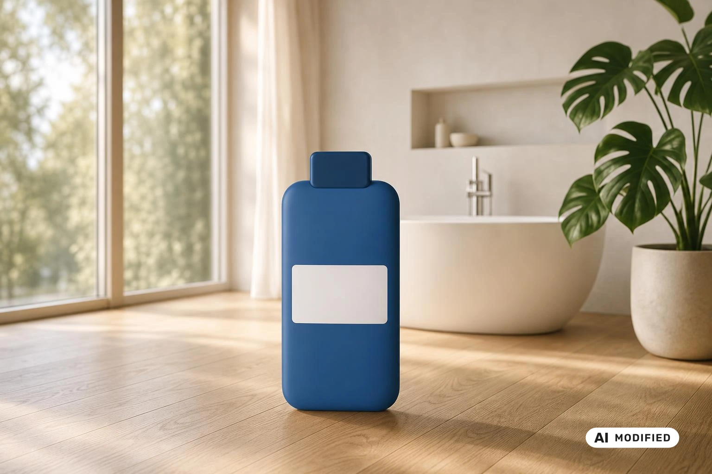
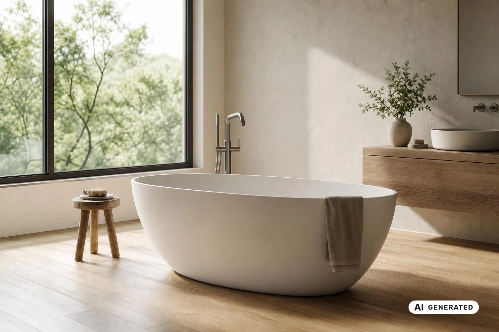

Liegewanne für die Pflege zu Hause
Bei eingeschränkter Beweglichkeit wird Baden oder Duschen schnell zur Belastung: Der Schritt in Wanne oder Dusche fühlt sich unsicher an, und jeder Waschtag kostet Kraft – die der pflegebedürftigen Person ebenso wie Ihre als Angehörige. Eine Liegewanne ist eine Wanne mit Liegefläche.
Beratung beim Hersteller [Name des Herstellers] anfragenWie gelingt die Körperpflege zu Hause, wenn Baden nicht mehr geht?
Auch wenn Baden nicht mehr geht, bleibt die Körperpflege zu Hause möglich: mit Anpassungen im Bad, passenden Hilfsmitteln und Unterstützung von außen. Schwierig wird das Baden meist dann, wenn die Beweglichkeit eingeschränkt ist oder im Bad der Platz fehlt. Der Einstieg in die Wanne, das Hinsetzen und Aufstehen oder das Stehen unter der Dusche werden dann für die gepflegte Person unsicher, und pflegende Angehörige tragen einen großen Teil der körperlichen Last.
Die Lösungen reichen von einfachen Anpassungen im Bad über Hilfsmittel bis zur Unterstützung durch einen Pflegedienst. Eine Möglichkeit unter den Hilfsmitteln ist die Liegewanne (eine Wanne, in der die pflegebedürftige Person im Liegen gewaschen wird). Sie ist eine Wanne mit Liegefläche. Übernimmt ein Pflegedienst die Körperpflege ganz oder teilweise, entlastet das Angehörige spürbar im Pflegealltag.
Welcher Weg passt, hängt von der Beweglichkeit der gepflegten Person, den Gegebenheiten im Bad und den Kräften der Pflegenden ab. Oft ergänzen sich die Lösungen: Ein angepasstes Bad, ein geeignetes Hilfsmittel und gelegentliche professionelle Hilfe machen die Körperpflege für alle Beteiligten sicherer. Sind Sie unsicher, welche Form der Körperpflege für Ihren Angehörigen geeignet ist, holen Sie ärztlichen Rat ein, bevor Sie sich für ein Hilfsmittel entscheiden.

Warum wird die Körperpflege in der Pflege zu Hause schwierig?
Die Körperpflege zu Hause wird meist dann zur Hürde, wenn mehrere Ursachen zusammenkommen: Die pflegebedürftige Person bewegt sich unsicherer, das Bad ist nicht auf Pflege ausgelegt, und Angehörige tragen beim Waschen viel körperliche Last. Diese drei Ursachen greifen im Alltag oft ineinander:
- Eingeschränkte Beweglichkeit
- Bauliche Hürden im Bad
- Körperliche Belastung der Pflegenden
Eingeschränkte Beweglichkeit
Eingeschränkte Beweglichkeit (eine Person kann sich nur noch langsam, mühsam oder mit Unterstützung bewegen, aufstehen oder hinsetzen) betrifft beim Baden gleich mehrere Schritte. Das Übersteigen des Wannenrands, das Hinsetzen auf den Wannenboden und vor allem das Aufstehen aus dem Wasser verlangen Kraft, Gleichgewicht und Koordination. Fehlt eines davon, wächst die Unsicherheit, und Betroffene meiden das Baden oft aus Sorge vor einem Sturz.
Bauliche Hürden im Bad
Ein gewöhnliches Badezimmer ist selten als pflegegerechtes Bad geplant. Hohe Wannenränder, Duschen mit Stufe, nasse und glatte Fliesen sowie fehlende Haltemöglichkeiten machen jeden Schritt riskanter. Hinzu kommt der Platz: Neben der Wanne reicht der Bewegungsraum oft kaum für eine zweite Person, die stützen oder helfen soll.
Körperliche Belastung der Pflegenden
Pflegende Angehörige beugen sich beim Waschen über den Wannenrand, stützen, heben und arbeiten dabei häufig in verdrehter Haltung. Das belastet Rücken und Schultern, besonders wenn die Körperpflege regelmäßig ansteht. Zur körperlichen Anstrengung kommen die Sorge, dass die gepflegte Person ausrutscht, und die Rücksicht auf eine sehr persönliche Situation.
Wo sich die Körperpflege spürbar erleichtern lässt, hängt deshalb davon ab, welche dieser drei Ursachen im eigenen Alltag am stärksten wiegt.

Was hilft pflegenden Angehörigen bei der Körperpflege zu Hause?
Bei der Körperpflege zu Hause entlasten sich pflegende Angehörige vor allem über drei Stellschrauben: ein Bad, das zur Pflegesituation passt, gut vorbereitete Abläufe und rechtzeitige Unterstützung von außen.
Die Grundlage bildet ein pflegegerechtes Bad (ein Badezimmer, in dem sich die gepflegte Person und die Pflegenden auch bei eingeschränkter Mobilität sicher bewegen können). Hilfsmittel (Gegenstände, die fehlende Kräfte oder Fähigkeiten ausgleichen und die Pflege erleichtern) ergänzen es, etwa Haltegriffe oder eine Liegewanne. Wer zusätzlich typische Fehler vermeidet und professionelle Hilfe einplant, verteilt die Last auf mehrere Schultern:
- Bad pflegegerecht gestalten: Raum, Wege und Hilfsmittel auf die Pflege abstimmen.
- Häufige Fehler bei der Pflege zu Hause vermeiden: Abläufe vorbereiten und die eigenen Grenzen achten.
- Entlastung durch Pflegedienst oder Tagespflege nutzen: Aufgaben teilen, statt alles allein zu tragen.
1. Bad pflegegerecht gestalten
Freie Wege, genügend Bewegungsraum neben Wanne oder Waschplatz und Haltegriffe an den Stellen, an denen sich die gepflegte Person abstützt, machen jede Bewegung sicherer. Legen Sie Handtücher, Waschutensilien und frische Kleidung vor Beginn in Griffweite bereit, damit Sie die Person während der Pflege nicht allein lassen müssen. Welche Hilfsmittel in Ihrem Bad sinnvoll sind, klären Sie am besten mit Fachleuten, etwa im Sanitätshaus oder mit dem Pflegedienst.
2. Häufige Fehler bei der Pflege zu Hause vermeiden
Beginnen Sie die Körperpflege nicht unter Zeitdruck oder ohne Vorbereitung, denn Hektik verunsichert beide Seiten. Beziehen Sie die gepflegte Person so weit wie möglich ein und lassen Sie sie selbst übernehmen, was sie noch kann. Heben oder tragen Sie nicht über Ihre Kräfte hinaus und holen Sie bei Unsicherheit, etwa zu Schmerzen oder Hautveränderungen, ärztlichen oder pflegefachlichen Rat ein.
3. Entlastung durch Pflegedienst oder Tagespflege nutzen
Ein ambulanter Pflegedienst kann die Körperpflege ganz oder an einzelnen Tagen übernehmen und Ihnen Handgriffe zeigen, die den Alltag erleichtern. Eine Tagespflege betreut die pflegebedürftige Person tagsüber außer Haus und verschafft Ihnen planbare Freiräume. Beide Angebote lassen sich mit der Pflege durch Angehörige verbinden, sodass Sie nicht jede Aufgabe allein stemmen müssen.

Wie unterstützt eine Liegewanne die Pflege zu Hause?
Als Hilfsmittel für die Körperpflege dient die Liegewanne in der häuslichen Pflege dazu, eine pflegebedürftige Person im Liegen zu waschen , ohne dass sie dafür aufstehen muss.
So bleibt die Körperpflege auch dann möglich, wenn Baden oder Duschen nicht mehr gehen.
Wie wird eine Liegewanne zu Hause aufgebaut?
Eine Liegewanne für die Pflege zu Hause bauen Sie nach den Vorgaben des Herstellers auf.
- Rahmen aufstellen
- Wanne einhängen
- Mehr dazu in der Anleitung
Welche Vorteile hat eine Liegewanne in der häuslichen Pflege?
Fazit zur Liegewanne für die Pflege zu Hause
Lassen Kraft, Gleichgewicht oder Gelenkigkeit nach, stößt die gewohnte Körperpflege in Wanne oder Dusche an ihre Grenzen, für die gepflegte Person ebenso wie für die Angehörigen. Welcher Weg trägt, hängt von der Ausgangslage ab: Anpassungen im Bad räumen bauliche Hürden aus dem Weg, Hilfsmittel gleichen fehlende Beweglichkeit aus, und professionelle Hilfe greift dort, wo die Kräfte der Familie nicht mehr reichen. Die Liegewanne ist ein Hilfsmittel mit Liegefläche. Ob sie zur konkreten Pflegesituation passt, sollte fachlich geklärt werden. Wer die Pflege auf mehrere Schultern verteilt, schont zugleich die eigene Gesundheit und hält den Alltag länger durch.
Für pflegende Angehörige lohnt es sich, die Körperpflege als Zusammenspiel zu planen. Bei der Einrichtung des Bads schaffen freie Wege und sichere Haltemöglichkeiten die Grundlage für jeden weiteren Schritt. In der Zusammenarbeit mit einem Pflegedienst können Sie klären, welche Aufgaben die Pflegekräfte übernehmen und ob ein Hilfsmittel wie die Liegewanne zu den gemeinsamen Abläufen passt. Übernehmen Sie die Pflege überwiegend selbst, hilft eine ehrliche Einschätzung Ihrer Belastbarkeit, um rechtzeitig Unterstützung einzubinden. Bleiben Zweifel, ob eine Lösung zur gesundheitlichen Situation der gepflegten Person passt, schafft ärztlicher Rat Klarheit.

Häufig gestellte Fragen zur Liegewanne für die Pflege zu Hause
Wie lange dauert der Aufbau?
[Offen: Die Aufbaudauer der Liegewanne ist nicht bestätigt und muss vom Kunden bestätigt werden.]
Brauche ich Werkzeug?
[Offen: Ob für den Aufbau der Liegewanne Werkzeug nötig ist, muss vom Kunden bestätigt werden.]
Bestand
Übernommener Text (synthetisch).
Persönliche Beratung zur Liegewanne
Synthetisches Beispiel: Wir beantworten Ihre Fragen telefonisch oder per E-Mail.
Jetzt Kontakt aufnehmenLieferbar in einer Woche
- Material Kunststoff (synthetisch)
- Maße 180 × 80 cm